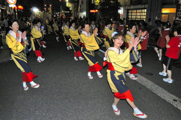

ふ ： ふるさとに舞う 夏の踊り子 武生ばやし
一言でいうと？
お祭りの定番ふるさと踊り

「こらさっとーどーじゃいなー♪」でおなじみの武生のふるさと踊りです。
お祭りに行ったことのある人は聞いたことがあるのではないでしょうか？盆踊り、ふるさと踊りでよく流れるナンバーです。
▼武生ばやしの様子
どうしてできたの？
地元の人が気軽に歌える歌を作るため
今から約64年前に「武生には手軽に歌える民謡調の歌がない」ということで作られました。
作曲：古賀政男氏
(美空ひばりさんなどに楽曲を作っていた)
歌手：島倉千代子さん
夏になると各お祭りで必ずと言っていいほど流れます。踊りは残念ながら私はあまり覚えていませんが、簡単な振り付けなので周りの人を見ながらでも十分踊れますよ。それにしても制作者が本当に豪華なラインナップですね～初耳でした…。